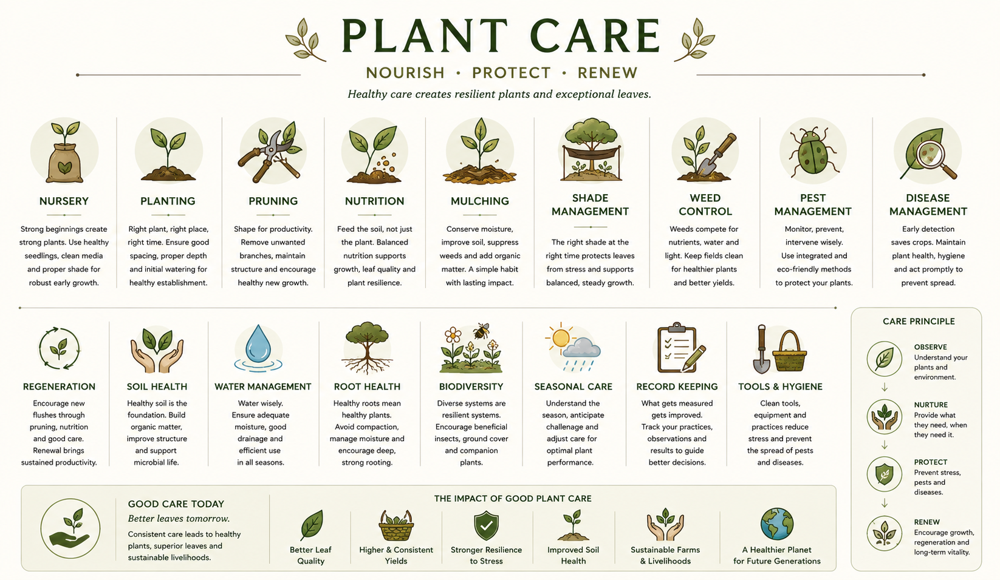

Healthy care creates resilient plants and exceptional leaves. This section covers the seventeen care practices that govern what happens between the plant being established and the leaf being harvested. For anyone who grows Buna material, this is the operational vocabulary of the farm.

Reference image — Plant Care: Nourish, Protect, Renew. Seventeen practices across two rows.
Where plant life begins before field planting. Strong beginnings create strong plants. Nursery practice includes selecting healthy seedlings, using clean growing media, and providing appropriate shade during the vulnerable early growth phase. A poorly managed nursery sets a ceiling on every season that follows.
Placing the plant in the field at the right spacing, depth, and time. Good planting includes correct hole preparation, proper initial watering, and awareness of companion planting or shade canopy. Right plant, right place, right time. A planting mistake compounds over years.
Removing unwanted branches to maintain structure, improve airflow, and encourage healthy new growth. Pruning shapes the plant for productivity — directing energy toward productive wood and away from exhausted or diseased material. Regular pruning is also a form of pest and disease prevention.
See Seasons — Post Harvest →Feeding the soil as much as the plant. Balanced nutrition — nitrogen, phosphorus, potassium, and trace minerals — supports growth, leaf quality, and plant resilience. The principle: feed the soil, not just the plant. Microbial life in healthy soil makes nutrients available; nutrition without soil health is only partially effective.
See Leaf Origin — Soil →Covering the soil around the plant with organic material — leaves, husks, compost — to conserve moisture, suppress weeds, and add organic matter as it breaks down. A simple, high-impact habit. Mulching improves soil health over time with minimal inputs.
Regulating the amount and quality of light reaching the coffee plant through the shade canopy above. For Citane, rubber trees provide the shade layer. The right shade at the right time protects leaves from stress and supports balanced, steady growth. Too much shade suppresses; too little burns.
See Leaf Origin — Sunlight →Managing unwanted plants that compete with coffee for water, nutrients, and light. Clean fields produce healthier plants and better yields. Weed control does not require herbicides — ground cover management, mulching, and timely manual clearing are effective and soil-friendly approaches.
Monitoring for, preventing, and responding to insect and animal pest pressure. Integrated pest management (IPM) uses observation first, then targeted intervention — preferring biological and eco-friendly methods over broad-spectrum chemicals. Healthy, well-nourished plants have natural resistance that reduces pest vulnerability.
Early detection saves crops. Monitoring for fungal, bacterial, and viral disease and acting promptly to prevent spread. Plant hygiene — clean tools, removed debris, good airflow through pruning — is the first line of defence. High humidity environments like Kerala require particular vigilance.
Actively encouraging new flushes through pruning, nutrition, and consistent care. Regeneration brings sustained productivity to the plant over its full lifespan — preventing the exhaustion that comes when a plant is only taken from without being renewed. Renewal brings consistent quality season after season.
See Seasons — Flush Cycle →Healthy soil is the invisible foundation of leaf quality. Building organic matter, improving structure, and supporting microbial communities all contribute to a soil that actively feeds the plant. Soil health is a long-term investment — it builds slowly and degrades quickly if neglected.
See Leaf Origin — Soil →Using water wisely — ensuring adequate moisture for growth while avoiding waterlogging, managing drainage, and being efficient in all seasons. Kerala's monsoon-driven rainfall means water management is as much about drainage and timing as irrigation. Good water management protects both roots and soil structure.
Healthy roots mean healthy plants. Root health requires avoiding soil compaction, managing moisture carefully, and encouraging deep rooting through appropriate soil preparation and mulching. Compacted or waterlogged soil restricts root development and limits the plant's ability to feed itself.
Diverse systems are resilient systems. Encouraging beneficial insects, ground cover, and companion plants creates a farm environment that is more stable, more self-regulating, and more productive over time. Monoculture is fragile; biodiversity builds long-term farm health.
See Environment & Impact →Understanding the season, anticipating challenges, and adjusting care accordingly. Seasonal care means working with the plant's natural rhythm rather than against it. Different seasons require different interventions — what is right in the dry season is wrong in the wet season.
See Seasons & Phenology →Tracking practices, observations, and results to guide better decisions. What gets measured gets improved. Records create institutional memory — so that patterns become visible, interventions can be evaluated, and knowledge is not lost when people move on. Record keeping is the foundation of consistency.
See Quality at Source — Traceability →Clean tools, equipment, and practices reduce stress on plants and prevent the spread of pests and diseases between plants and between fields. Tool hygiene is often the most overlooked farm practice — and one of the highest-return habits available to any producer.
Understand your plants and their environment before acting. Observation is the first and most important step. Most farm problems have early warning signs that are only visible to someone who is looking.
Provide what the plant needs, when it needs it. Nurture is responsive care — not a fixed schedule, but an attentive practice guided by observation.
Prevent stress, pests, and diseases before they take hold. Protection is proactive — it is easier and less costly than cure. Good care is mostly prevention.
Encourage growth, regeneration, and long-term vitality. Renewal completes the cycle — a plant that is consistently renewed produces consistently exceptional leaves across many seasons.
Consistent care leads to healthy plants, superior leaves, and sustainable livelihoods. The impact of good plant care ripples outward: better leaf quality, higher and more consistent yields, stronger resilience to stress, improved soil health, sustainable farms and livelihoods, and a healthier planet for future generations.